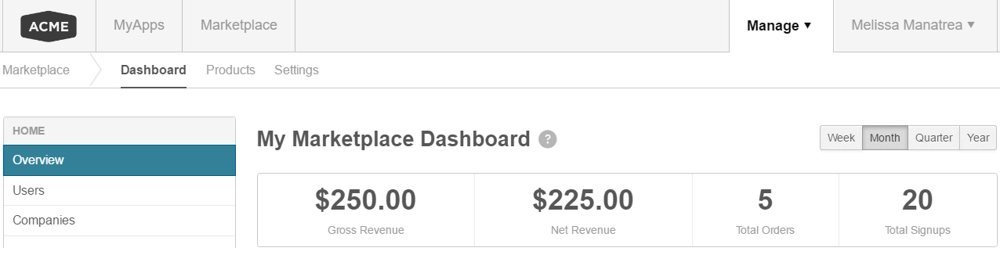

Marketplace Managers can click the Dashboard link in the top navigation pane to access marketplace management tools and records for the following categories:
The Dashboard option in the top navigation bar is shown in the following graphic.

The three categories (Home, Billing, and Events) do not have corresponding landing pages, so the first option available in the left navigation pane appears by default—in this case, the Overview option and the My Marketplace Dashboard page.